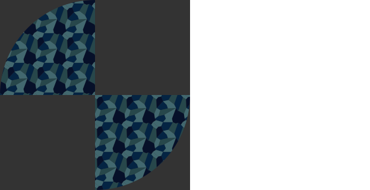

ADAM GUTTENTAG FRONT-END NINJA Featured Work WATERFALLhttp://codepen.io/guttentag/blog/deconstructing-escher-s-floating-point-waterfall  PATTERNShttp://codepen.io/guttentag/blog/svg-patterns-rotation-and-clippaths CRANEhttp://codepen.io/guttentag/blog/svg-animated-papercrane